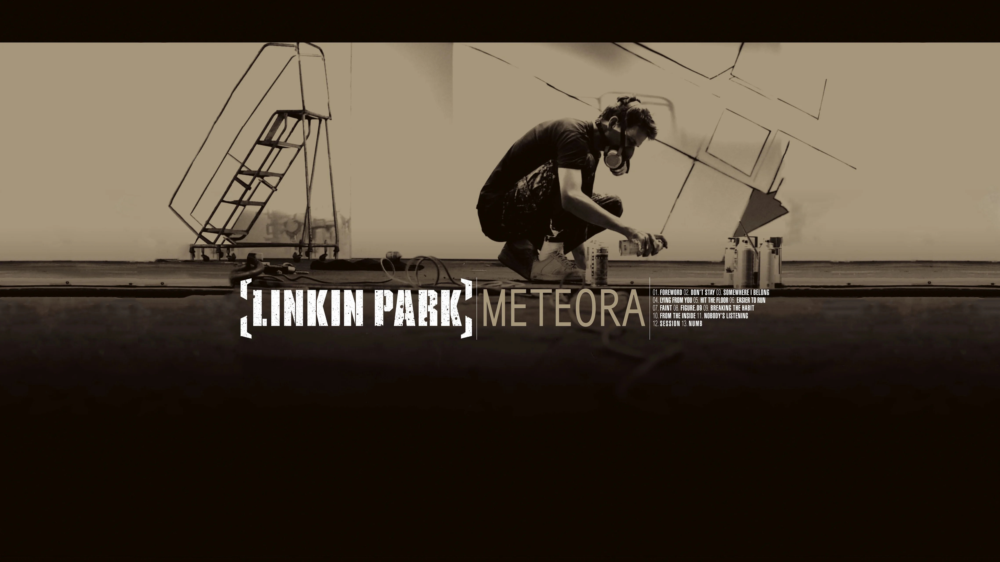
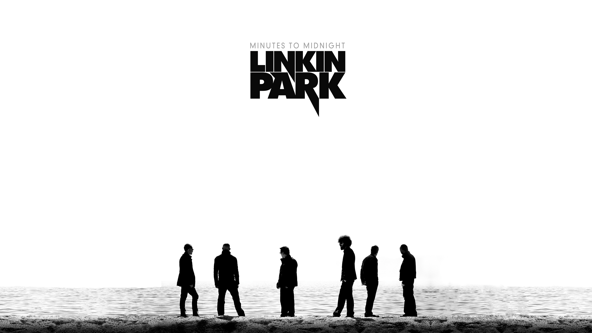
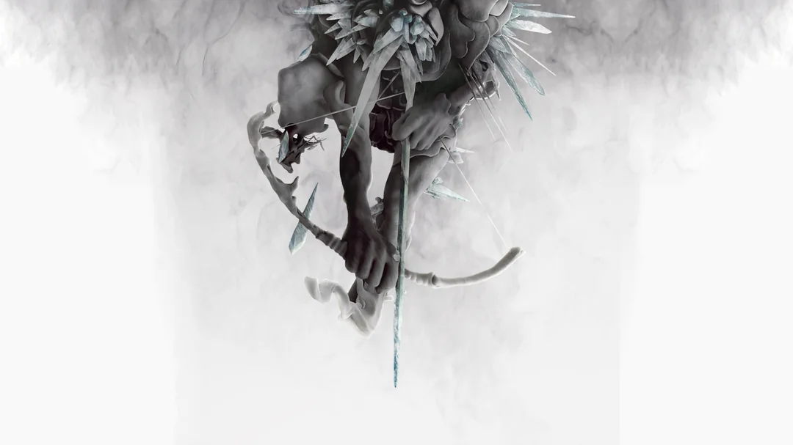
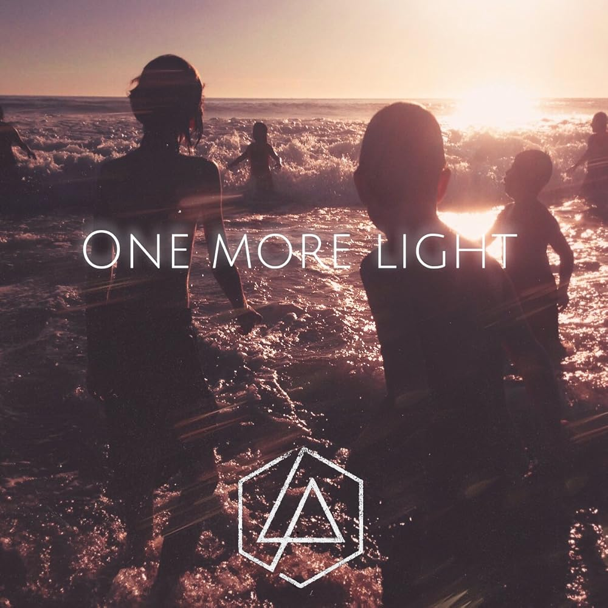

All Official Studio LP Albums
Linkin Park is an American rock band formed in Agoura
Hills, California, in 1996.
The band's lineup consists of vocalist/rhythm guitarist/keyboardist
Mike Shinoda, lead guitarist
Brad Delson, bassist
Dave Farrell
, DJ/turntablist
Joe Hahn, and drummer
Rob Bourdon, with vocalist
Chester Bennington
also part of the band until his death in 2017.
Let's dive in their Discography

Hybrid Theory is the debut studio album by American rock
band Linkin Park, released on October 24, 2000, through Warner Bros.
Records.
"Crawling" and "In the End" were massive radio hits; the latter song
even topped the charts in several countries.
track list
- Papercut
- One Step Closer
- With You
- Points of Authority
- Crawling
- Runaway
- By Myself
- In the End
- A Place for My Head
- Forgotten
- Cure for the Itch
- Pushing Me Away
- High Voltage * (Bonus track)
- My December * (Bonus track)

Meteora is the second studio album by American rock band
Linkin Park. It was released on March 25, 2003, through Warner Bros.
Records.
"Somewhere I Belong", "Faint", "Numb", and "Breaking the Habit" were
released as singles.
track list
- Foreword
- Don't Stay
- Somewhere I Belong
- Lying from You
- Hit the Floor
- Easier to Run
- Faint
- Figure.09
- Breaking the Habit
- From the Inside
- Nobody's Listening
- Session
- Numb
- Lost! * (Posthumous track)
- Fighting Myself * (Posthumous track)

Minutes to Midnight is the third studio album by American
rock band Linkin Park, released on May 14, 2007, through Warner Bros.
Records.
"What I've Done", "Bleed It Out", "Shadow of the Day", and "Given Up"
were released as singles.
track list
- Wake
- Given Up
- Leave Out All the Rest
- Bleed It Out
- Shadow of the Day
- What I've Done
- Hands Held High
- No More Sorrow
- Valentine's Day
- In Between
- In Pieces
- The Little Things Give You Away
- No Roads Left * (Bonus track)

A Thousand Suns is the fourth studio album by American rock
band Linkin Park. It was released on September 8, 2010, through Warner
Bros. Records.
"The Catalyst", "Waiting for the End", "Burning in the Skies", and
"Iridescent" were released as singles.
track list
- The Requiem
- The Radiance
- Burning in the Skies
- Empty Spaces
- When They Come for Me
- Robot Boy
- Jornada del Muerto
- Waiting for the End
- Blackout
- Wretches and Kings
- Wisdom, Justice, and Love
- Iridescent
- Fallout
- The Catalyst
- The Messenger

Living Things is the fifth studio album by American rock band
Linkin Park. It was released under Warner Bros. Records and Machine
Shop Recordings on June 20, 2012.
"Burn It Down", "Lost in the Echo", "Powerless", and "Castle of Glass"
were released as singles.
track list
- Lost in the Echo
- In My Remains
- Burn It Down
- Lies Greed Misery
- I'll Be Gone
- Castle of Glass
- Victimized
- Roads Untraveled
- Skin to Bone
- Until It Breaks
- Tinfoil
- Powerless

The Hunting Party is the sixth studio album by American rock
band Linkin Park. The album, produced by band members Mike Shinoda
and Brad Delson, was released by Warner Bros. Records on June 13, 2014.
"Guilty All the Same", "Until It's Gone", "Wastelands", and "Final Masquerade"
were released as singles.
track list
- Keys to the Kingdom
- All for Nothing
- Guilty All the Same
- The Summoning
- War
- Wastelands
- Until It's Gone
- Rebellion
- Mark the Graves
- Drawbar
- Final Masquerade
- A Line in the Sand

One More Light is the seventh studio album by American rock
band Linkin Park. It was released on May 19, 2017, through Warner Bros.
Records and Machine Shop.
"Heavy", "Battle Symphony", "Good Goodbye", and "One More Light" were
released as singles.
track list
- Nobody Can Save Me
- Good Goodbye
- Talking to Myself
- Battle Symphony
- Invisible
- Heavy
- Sorry for Now
- Halfway Right
- One More Light
- Sharp Edges
- Friendly Fire * (Posthumous track)